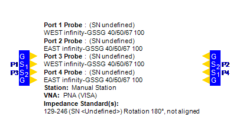
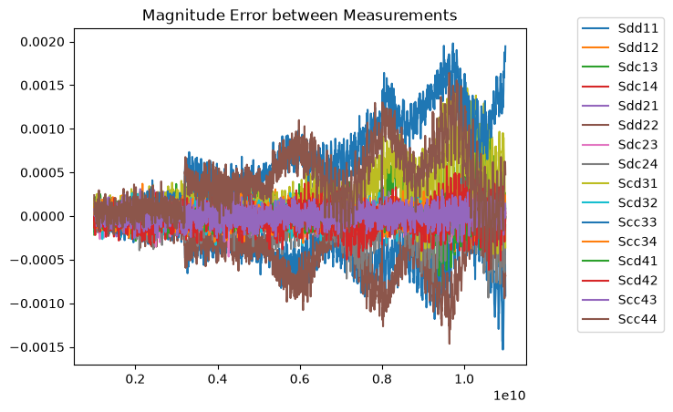
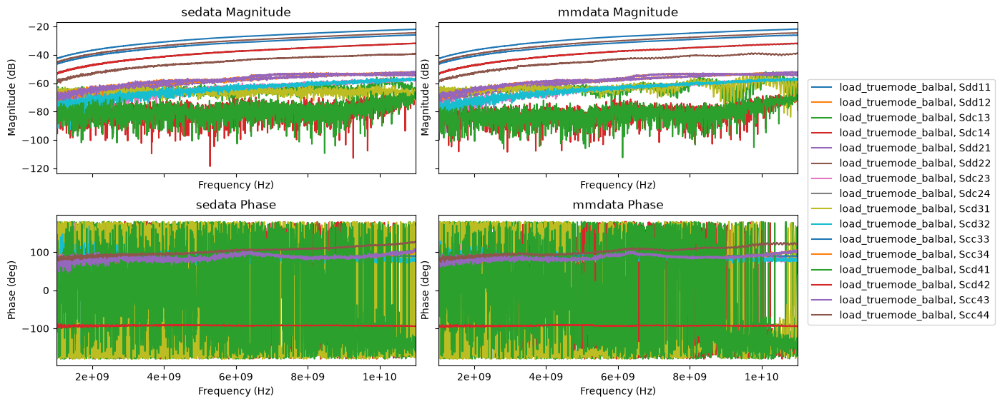
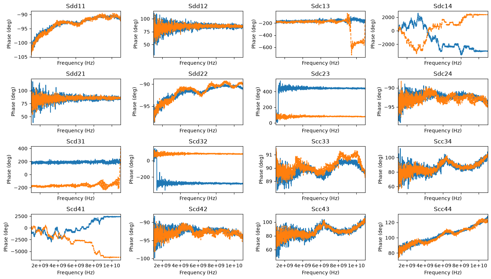

Mixed Mode S-Parameter Conversion#
When analyzing differential devices, mixed-mode S-Parameters are typically used to look at differential and common mode characteristics. Scikit-rf provides functions to ease conversion between single ended and mixed mode S-parameters. Nevertheless, the user must be careful to set up ports correctly and take note of the form of the mixed-mode matrix to prevent confusion. This notebook will introduce you to the process of converting from single ended to mixed mode S parameters using a 50 ohm calibration load as an example. The experimental port setup consists of two differential probes as shown:

Experimental data for the 50 ohm load taken in normal “single ended” mode will be compared against data saved in a mixed mode format and taken using Keysight’s integrated True Mode Stimulus, which applies true differential and common mode signals during the measurement process.
[1]:
import re
import matplotlib.pyplot as plt
import numpy as np
import skrf as rf
sedatafile = r'mixedmodebasics_files/load_se.s4p'
mmdatafile = r'mixedmodebasics_files/load_truemode_balbal.s4p'
for file in [sedatafile, mmdatafile]:
with open(file, encoding='cp1252') as f:
for line in f:
print(line.rstrip())
if re.search('#', line):
break
else:
pass
print('\n')
! 4-Port S-parameters saved by WinCal
! VAR MeasName=S-Parameters (CALIBRATED_DATA) read from VNA (N5225A)
! VAR MeasDate=7/7/2020 2:51:53 PM
! VAR NAME=load_se
! VAR FILENAME=load_se.S4P
! VAR DATE=7/7/2020 2:51:53 PM
! VAR PHYS_PORTS=1,2,3,4
!
# Hz S RI R 50
!Agilent Technologies,N5225A,MY51451011,A.09.90.21
!Agilent N5225A: A.09.90.21
!Date: Tuesday, July 07, 2020 17:08:48
!Correction: Sdd11(Full 4 Port(1,2,3,4))
!Sdc11(Full 4 Port(1,2,3,4))
!Sdd12(Full 4 Port(1,2,3,4))
!Sdc12(Full 4 Port(1,2,3,4))
!Scd11(Full 4 Port(1,2,3,4))
!Scc11(Full 4 Port(1,2,3,4))
!Scd12(Full 4 Port(1,2,3,4))
!Scc12(Full 4 Port(1,2,3,4))
!Sdd21(Full 4 Port(1,2,3,4))
!Sdc21(Full 4 Port(1,2,3,4))
!Sdd22(Full 4 Port(1,2,3,4))
!Sdc22(Full 4 Port(1,2,3,4))
!Scd21(Full 4 Port(1,2,3,4))
!Scc21(Full 4 Port(1,2,3,4))
!Scd22(Full 4 Port(1,2,3,4))
!Scc22(Full 4 Port(1,2,3,4))
!Balanced Topology: BBAL
!S4P File: Measurements: <Sdd11,Sdc11,Sdd12,Sdc12>,
!<Scd11,Scc11,Scd12,Scc12>,
!<Sdd21,Sdc21,Sdd22,Sdc22>,
!<Scd21,Scc21,Scd22,Scc22>:
# Hz S RI R 50
The header data for the mixed mode data indicates that it is saved in the following format:
It is important to keep this in mind, as this format may vary between different software and hardware. For instance, skrf will transform singled ended data to the following form when two balanced ports are present:
To transform our single ended data, we must first pair the ports as they existed during the experimental setup with ports 1 and 3 making up one balanced port, and 2 and 4 on the other probe. We can then use the se2gmm() method of the skrf.Network class to transform to a mixed mode s-parameter matrix, with the p parameter used to specify the number of mixed mode ports. Skrf will transform the ports in pairs starting at the lowest number ports (1 and 3 after our renumbering) and continue
until the matrix contains p mixed mode ports, leaving the remaining ports as single ended.
[2]:
sedata = rf.Network(sedatafile)
sedata.renumber([0, 1, 2, 3], [0, 2, 1, 3]) # pair ports as 1,3 and 2,4 to match experimental setup
sedata.se2gmm(p=2) # two balanced ports
# sedata now in form Sdd Sdc with each submatrix as S11 S12
# Scd Scc S21 S22
The following function converts a two-port balanced-balanced network in the skrf format into the format used by Keysight to make data comparisons easier:
[3]:
def gmm_reorder(m):
"""
Reorders data from form 11 12 with each submatrix as dd dc
21 22 cd cc
to form dd dc with each submatrix as 11 12
cd cc 21 22
"""
b = np.array([1, 0, 0, 0,
0, 0, 1, 0,
0, 1, 0, 0,
0, 0, 0, 1]).reshape(4, 4)
m = b.dot(m.dot(b))
return m
mmdata = rf.Network(mmdatafile)
# raw data is mmdata in form S11 S12 with each submatrix as dd dc
# S21 S22 cd cc
for i in range(mmdata.frequency.npoints):
mmdata.s[i, :, :] = gmm_reorder(mmdata.s[i, :, :])
mmdata.port_modes = ['D', 'D', 'C', 'C']
Now that the two networks are in the same format, we can see that skrf does not consider them equal. This is because the networks are not identical, they are merely two measurements of the same device, both with experimental noise and variation. If the tolerances of the comparison are relaxed, the comparison of the networks returns True:
[4]:
False
True
Plotted, the error looks like this:
[5]:

[6]:
fig, axes = plt.subplots(2,2, sharex=True, sharey='row', figsize=(14,6))
sedata.plot_s_db(ax=axes[0][0])
mmdata.plot_s_db(ax=axes[0][1])
sedata.plot_s_deg(ax=axes[1][0])
mmdata.plot_s_deg(ax=axes[1][1])
axes[0][0].get_legend().remove()
axes[1][0].get_legend().remove()
axes[1][1].get_legend().remove()
axes[0][1].get_legend().remove()
axes[0][0].set_title('sedata Magnitude')
axes[0][1].set_title('mmdata Magnitude')
axes[1][0].set_title('sedata Phase')
axes[1][1].set_title('mmdata Phase')
fig.legend(*axes[0, 1].get_legend_handles_labels(), loc="center right")
fig.tight_layout()
plt.subplots_adjust(top=0.9, right=0.8)

[7]:
fig, axes = plt.subplots(4,4, sharex=True, figsize=(14,8))
for m in range(4):
for n in range(4):
sedata.plot_s_deg_unwrap(m=m, n=n, ax=axes[m][n])
mmdata.plot_s_deg_unwrap(m=m, n=n, ax=axes[m][n], ls='--')
axes[m][n].get_legend().remove()
axes[m][n].set_title(f'S{sedata._fmt_trace_name(m, n)}')
fig.tight_layout()

[ ]: